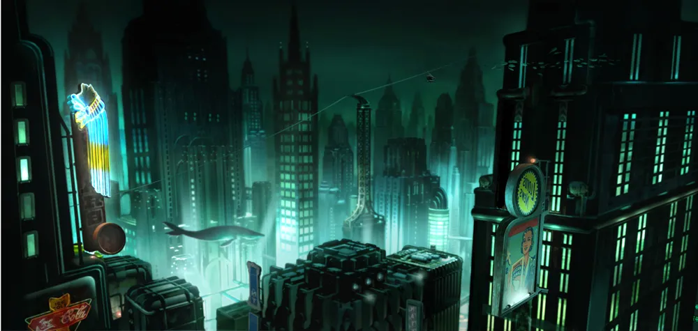

Rapture

Fundada no ano de 1951, Rapture á a grande criação de Andrew Ryan, um local onde todos seriam livres para fazer o que quiserem
onde o cientista não seria impedido por direitos humanitários, o artista não temeria a censura e os mais fortes não ficariam com medo
do mais fracos, tudo graças ao pensamento de uma "corrente invisivel".
Linha do Tempo de Rapture
- 21/08/1945: Andrew Ryan anuncia os planos para a construção de Rapture
- 1946: A Construção de Rapture é iniciada
- Final de 1946 até 1950: Vários intelectuais começam a desaparecer misteriosamente
- 1950-1959: A Produção dos plasmids começa a ficar instável, junto com a autoridade de Andrew Ryan, e surge um revolucionário
conhecido como Atlas, que começar à se preparar para lutar contra Ryan e seu regime
- Final de 1959: A Guerra Civil de Rapture inicia
- 1960: Os acontecimentos do primeiro Bioshock ocorrem
- 1960-1967: Sofia Lamb começa a tomar o controle da cidade
- 1968: Os acontecimentos do segundo Bioshock ocorrem
- 1980 Para Frente: Não existe nenhuma evidência concreta da existência de Rapture no mundo de Bioshock, apenas documentários
especulando se ela realmente existe ou não
Voltar à Página Principal